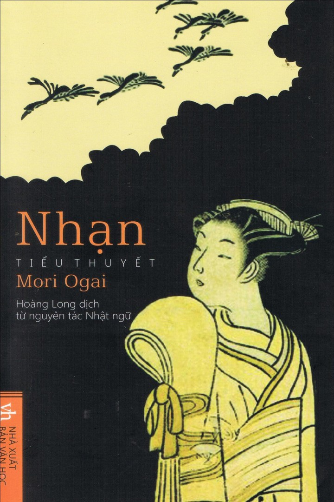

Tác phẩm chính

- Vũ nữ (1890)
- Vũ nữ thường được coi là một trong những tác phẩm đầu tiên của văn học Nhật Bản sử dụng tường thuật ngôi thứ nhất chủ quan, kể lại chuyện tình giữa chàng trai Nhật và cô gái Đức.
- Vita Sexualis (1909)
- Vita Sexualis là một tác phẩm bán tự truyện mang tính triết học về tính dục và tâm lý. Tác phẩm đã bị cấm sau một tháng xuất bản vì bị cho là quá khêu gợi.
- Nhạn (1911-1913)
- Nhạn viết về một chuyện tình không thành trong bối cảnh xã hội biến động và phương Tây hóa. Tác phẩm khắc họa chân thực những trăn trở của người phụ nữ thời đại này.
- Shibue Chusai (1916)
- Là tác phẩm tiểu sử nổi tiếng nhất của ông, Shibue Chusai viết về vị bác sĩ cùng tên, dựa trên những ghi chép của gia đình Shibue.